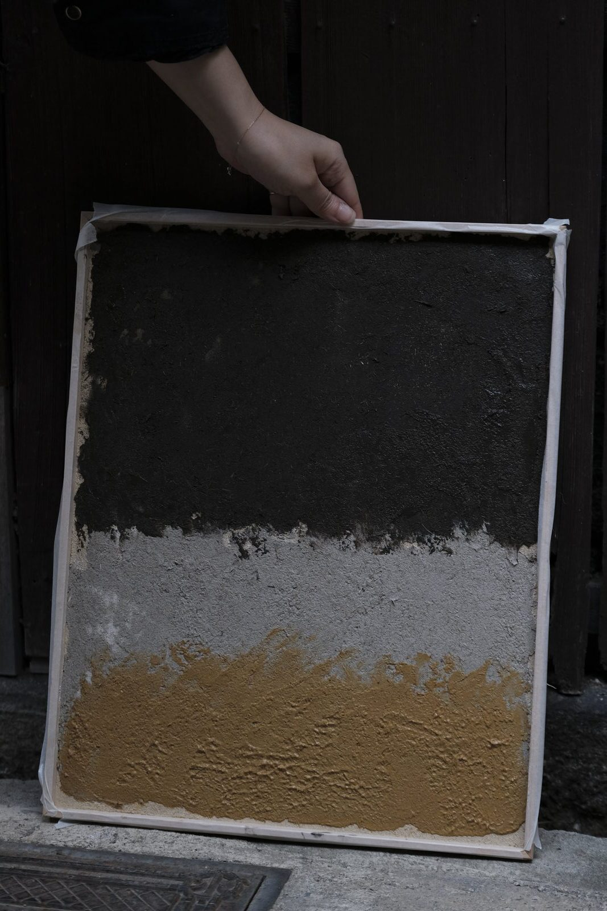
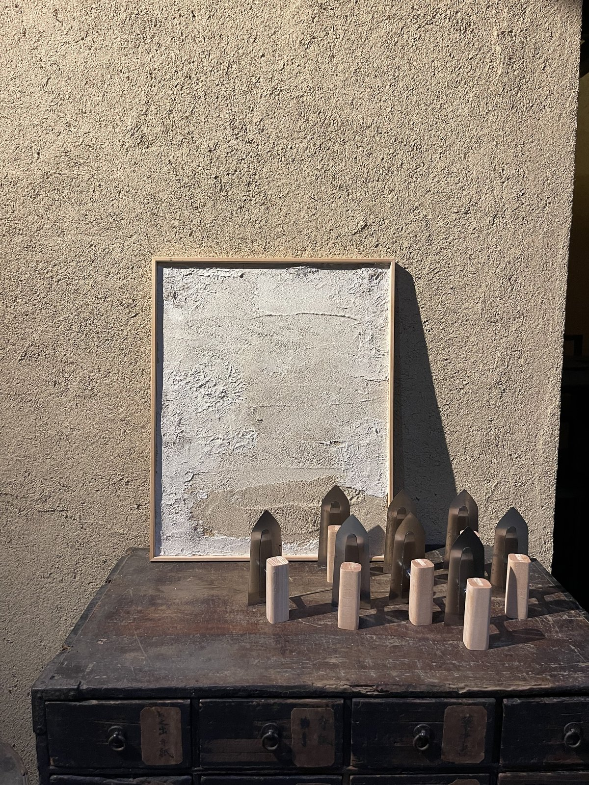
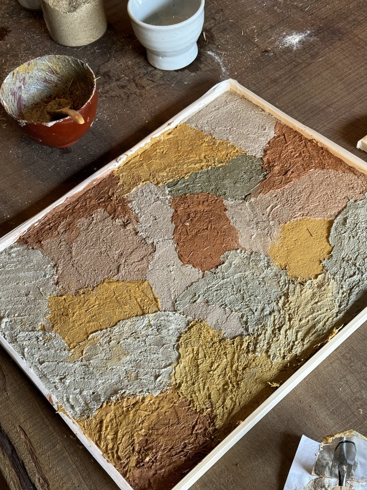
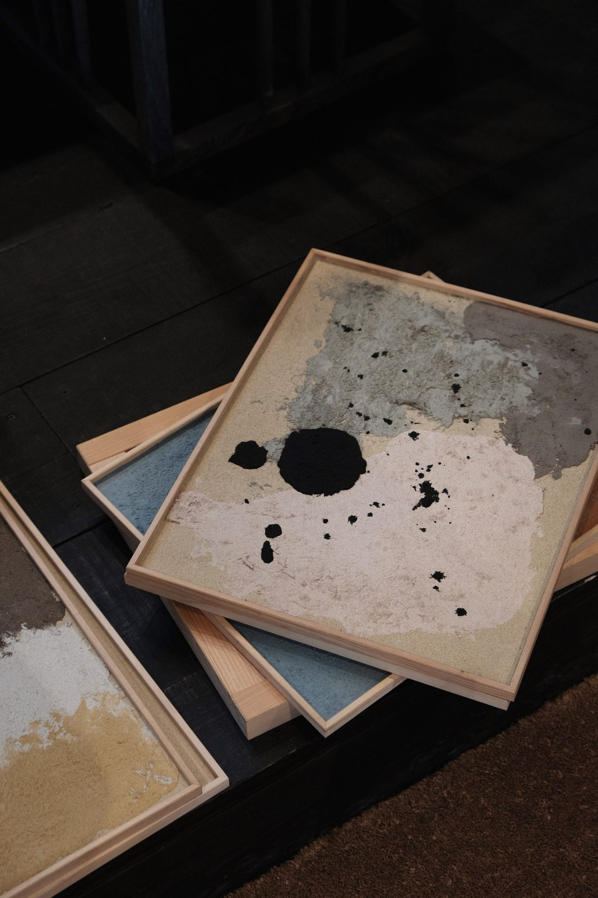
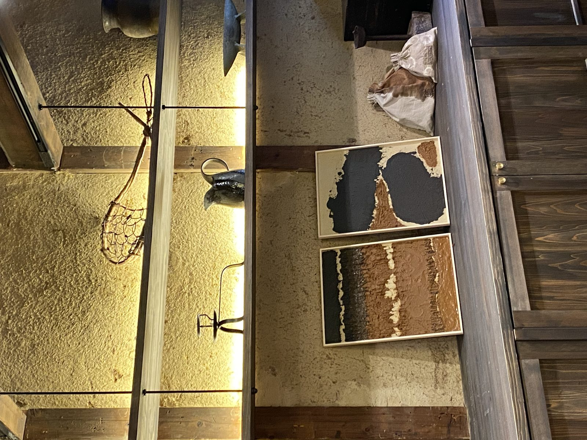
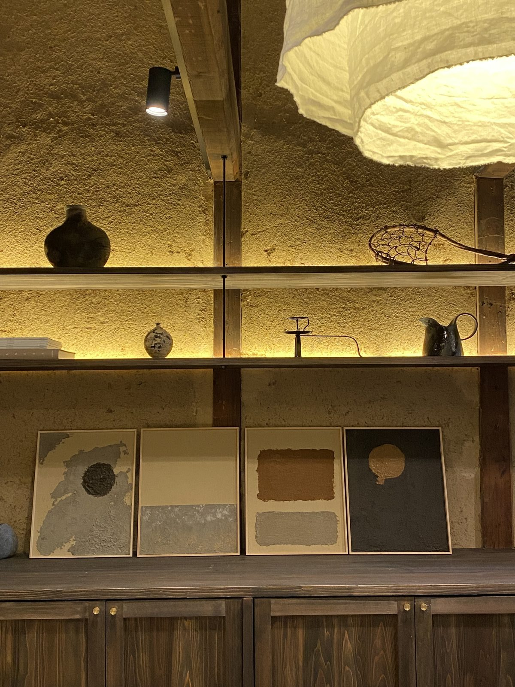
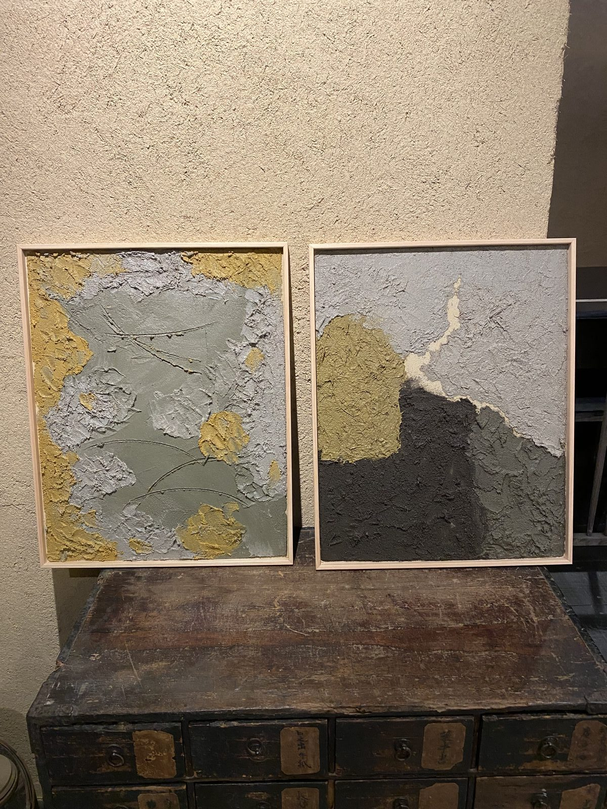
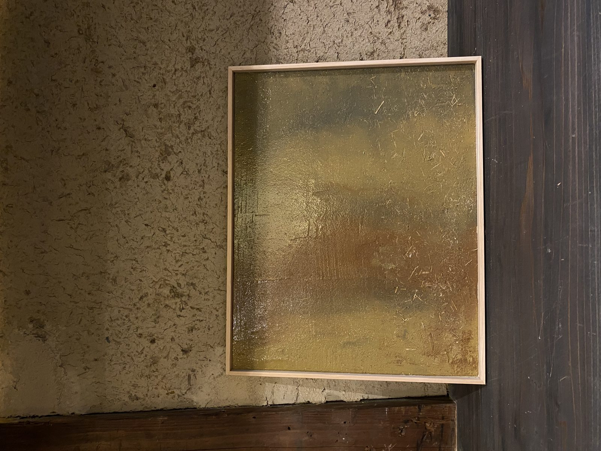

i.
Welcome tea
You're greeted at the atelier with a seasonal cup of tea and a quiet introduction. Your teacher walks you through the materials and the day ahead — no rush.
Make your own art panel using Tsuchikabe — a traditional machiya wall material of clay, rice straw, sand, and seaweed.
Tsuchikabe, or earthen wall, is a key material in Kyoto's traditional machiyas — not just for its durability, but also for its attributes to enhance physical and mental well-being.
A distinctive blend of clay, rice straw, sand, and seaweed, crafted by skilled craftspeople called Sakans. In our workshop, let's discover this traditional craft by making your own earthen wall art panel — a piece of Japan's heritage to bring home in a meaningful way.
Each panel you shape is yours to keep — a piece of Kyoto's machiya tradition, finished in your own hand and ready to hang in your home.
H45 × W36 × D2 cm, on a lightweight wooden frame. Hangs flush, like a small tile of earth.
We wrap your panel in soft padding so it fits flat in checked luggage — no fragile fuss.
The same earthen mix that quiets a Kyoto machiya — softening sound, balancing humidity, settling a room.
A quiet 2.5 hours at the atelier — guided, unhurried, made for arriving without a plan.
You're greeted at the atelier with a seasonal cup of tea and a quiet introduction. Your teacher walks you through the materials and the day ahead — no rush.
Hands in the clay — judging texture by feel. Balancing rice straw, sand, and binder under guidance from your teacher.
Trowel work onto your panel. Layering and smoothing — the small choices that make the piece yours.
Texture, colour, edges. We pack your panel in light wrapping so it travels home safely.
Guests come for an afternoon and leave with a panel — and, more often than not, a few words about what surprised them.
I expected a craft class. I left with a small piece of Kyoto I now look at every morning, and a much quieter mind than when I arrived.
The teacher took it slow. By the time we were finishing the panel I'd forgotten about my phone, my flight, all of it. The smell of the clay was the best part.
It travelled home flat in my carry-on and now hangs above my desk. People always ask what it is — that's a fun conversation.












Kyoto runs at half-speed. Temple bells in the early hours. Shop curtains drifting at noon. The river quiet by dusk. The seasons change without asking permission — cherry, plum, maple, snow.
You arrive at Maana Atelier on a small street in Nishijin, the old weavers' district. Inside, the machiya keeps its own air: cool stone, soft daylight, the smell of clay.
A workshop is one afternoon. The city gives you the rest.
Maana Atelier is a multi-faceted space created to explore the ever-expanding passions and new offerings for our community. This traditional machiya is thoughtfully restored to reveal its raw beauty and imperfections — a place for exploration through workshops, community events, and more.
Kyoto Research Institute was founded under the direction of Momoko Nakamura. Momoko's interest stems from 20 years of communicating and educating on cookery culture and the food system, informed by anthropological field research across the Japanese archipelago.
The Institute's research now extends beyond food, expanding into both textile and home — with the growing understanding that each pillar of Japanese living originates from a single terroir.
Learn more¥38,000 · tax included · all materials provided · 7-day flexible cancellation.